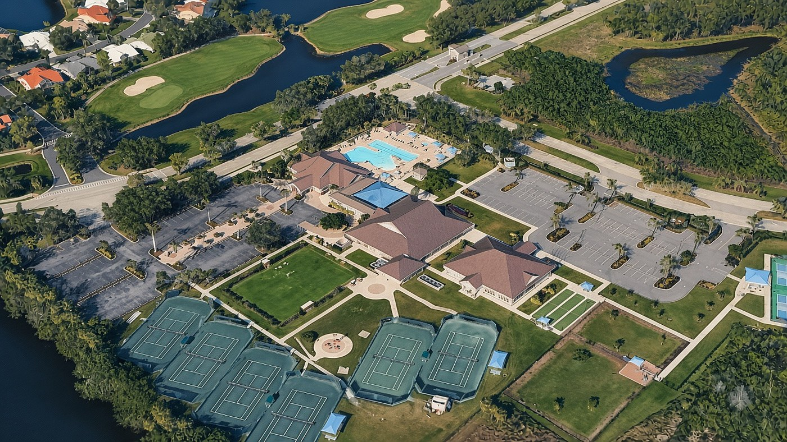

Draft preview for review. Not published. New Page for /explore/port-charlotte/riverwood/. Goes live 2026-12-05. Images shown from local copies. Rollout batch
Riverwood, Port Charlotte: Gated Golf Community on the Myakka River

Explore · Port Charlotte · Riverwood
Riverwood is a gated, deed-restricted golf community in Port Charlotte with 1,322 homes in 29 neighborhoods, a resort-style activity campus, and a kayak launch on the Myakka River.
It is one of the most complete amenity packages in Charlotte County, with a beach club on Manasota Key on top of golf, tennis, and pickleball. Here is what to know about Riverwood, Port Charlotte homes for sale, the two governing bodies, and what to check before you buy. For the wider area, see Explore Port Charlotte.
The short version
Size. 1,322 homes, 29 neighborhoods, about 1,300 acres, per the community association.
Golf. 18-hole, par-72 Gene Bates course; privately owned, open to the public.
Amenities. Pool and spa, 6 tennis, 6 pickleball, croquet, bocce, fitness center, Myakka River kayak launch.
Two bodies. An HOA (RCA) and a CDD (RCDD) each have their own assessment.
1,322
homes in 29 neighborhoods
870
single-family homes on the county roll
$425,000
median qualified single-family sale, 2025 and 2026
2003
median single-family year built
Source: Riverwood Community Association, About Us; Charlotte County Property Appraiser, parcel file and subdivision list (downloaded Nov 20, 2026).
Community
What Riverwood is
Gated, deed-restricted, golf at the center.
Riverwood describes itself as a gated, deed-restricted community with a private golf course, 29 distinct neighborhoods, and 1,322 homes on about 1,300 acres of preserves, lakes, ponds, and golf course. Home types include condominiums, villas, single-family homes, and estate homes. Addresses are in Port Charlotte, ZIP 33953.
Source: Riverwood Community Association, About Us; Riverwood neighborhoods.
Amenities
Amenities and the golf course
A full activity campus.
The association lists a saltwater pool with beach entry and a heated spa, six Har-Tru clay tennis courts, six pickleball courts, three bocce courts, a croquet lawn, a 24-hour fitness center, an activity center, a library, dog parks, RV and boat storage for a fee, and a boardwalk and kayak launch on the Myakka River at Tarpon Harbor II.
The 18-hole, par-72 Gene Bates course sits in the middle of the community. It is privately owned and open to the public, with memberships available; the restaurant serves lunch daily to residents and golfers, and evening dinners need a golf membership. Riverwood also has a beach club on Manasota Key, under a separate paid membership.
Source: Riverwood Community Association, Amenities; Riverwood Golf Club.

The Riverwood activity center, pool and courts.
Homes
Riverwood homes for sale
Single-family figures from the county.
Across the 14 Riverwood plats we matched on the county roll, there are 870 single-family homes built from 1993 to 2026, with a median of 2003. The median home has about 2,026 square feet; 51 percent carry the county's waterfront flag, largely lakes, ponds, and golf course water, and 72 percent have a pool.
| Measure | Value |
|---|---|
| Single-family homes | 870 |
| Years built | 1993 to 2026 |
| Median county just value | $377,000 |
| Middle half of just values | $314,000 to $465,000 |
| Median qualified sale, 2025 and 2026 | $425,000 (99 sales) |
County figures come from the Charlotte County Property Appraiser's public parcel file (downloaded November 20, 2026). Just value is the county's market value estimate on the latest certified roll, not an appraisal or a list price. Sale figures use each parcel's most recent recorded sale when that sale was qualified and dated 2025 or 2026. Condos and villas are not included.
Source: Charlotte County Property Appraiser, parcel file and subdivision list (downloaded Nov 20, 2026).
Costs
RCA, RCDD, and golf
Budget for each line.
Two bodies govern Riverwood. The Riverwood Community Association, a Chapter 720 homeowners association with a five-member elected board, runs day-to-day operations and is funded by quarterly assessments, with landscaping an extra assessment where it maintains the neighborhood. The Riverwood Community Development District owns the infrastructure and amenity buildings and is funded through the property tax bill; water and sewer are billed separately.
Golf membership and the beach club are separate costs again. Our insurance guide and homestead guide cover the rest.
Source: Riverwood Community Association, About Us.
Before you buy
Four checks in Riverwood
Neighborhood by neighborhood.
Before buying in Riverwood, confirm which of the 29 neighborhoods the home is in and whether it pays the extra landscaping assessment, get the RCA and RCDD assessments in writing, decide whether you want golf or beach club memberships, and pull the flood zone and insurance quotes.
Neighborhood rules
Landscaping fees vary by neighborhood. Confirm what applies to the home.
RCA and RCDD
Ask for both assessments, plus water and sewer billing.
Memberships
Golf and the beach club are optional, paid memberships.
Flood and insurance
Pull the FEMA zone and get quotes during inspection.
Source: FEMA Flood Map Service Center.
FAQs
Riverwood: common questions
Where is Riverwood?
Riverwood is in Port Charlotte, ZIP 33953, in Charlotte County. The community association office is at 4250 Riverwood Drive, and the community's kayak launch is on the Myakka River.
How many homes are in Riverwood?
The Riverwood Community Association says there are 1,322 homes in 29 neighborhoods on about 1,300 acres of preserves, lakes, ponds, and golf course, including condominiums, villas, single-family, and estate homes.
Is the Riverwood golf course private?
The 18-hole, par-72 course designed by Gene Bates is privately owned, open to the public, and offers memberships. Evening dinners and events at the restaurant are for golf members only.
Does Riverwood have a CDD?
Yes. The Riverwood Community Development District owns the activity center, water and sewer facilities, the dog park, the RV and boat parking area, and the Beach Club. It is funded through assessments on the Charlotte County property tax bill, with water and sewer billed separately.
Does Riverwood have a beach club?
Yes. Riverwood has a beach club on Manasota Key, managed by the CDD and available under a separate paid membership.
What do Riverwood homes cost?
For single-family homes on the county roll, the median just value is about $377,000 and the median qualified 2025 and 2026 sale was about $425,000 across 99 sales. Condos and villas are not included in those figures.
Comparing Riverwood neighborhoods?
We will match you to the right neighborhood, pull recent sales, and get the RCA, RCDD, and club costs in one place. Call or text The Helgemo Team at (941) 770-2275.
The office is at 320 Cross Street, Punta Gorda, Florida 33950. You can also meet Brian Helgemo or read more about the team.
Sources: Riverwood Community Association, About Us; Riverwood Community Association, Amenities; Riverwood neighborhoods; Riverwood Golf Club; Charlotte County Property Appraiser, parcel file and subdivision list (downloaded Nov 20, 2026); FEMA Flood Map Service Center. Checked November 20, 2026.